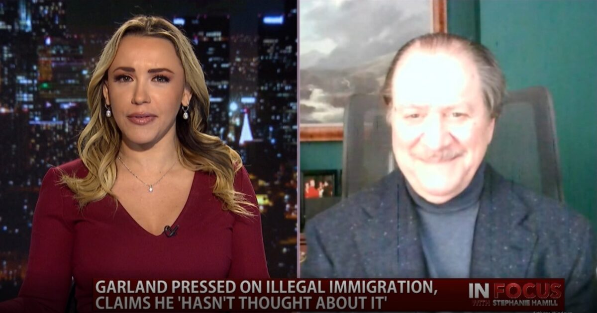

Former U.S. Attorney, Joe diGenova, on Biden’s Pick for Attorney General
In Focus
Former United States Attorney for the District of Columbia, Joe diGenova, joins us to discuss President Biden’s nominee for Attorney General, Xavier Becerra.
Posted On: 2021-02-24T00:00:00

Content Date: 2021-02-24
Download Date: 2021-04-16
Document ID: L0C049W53